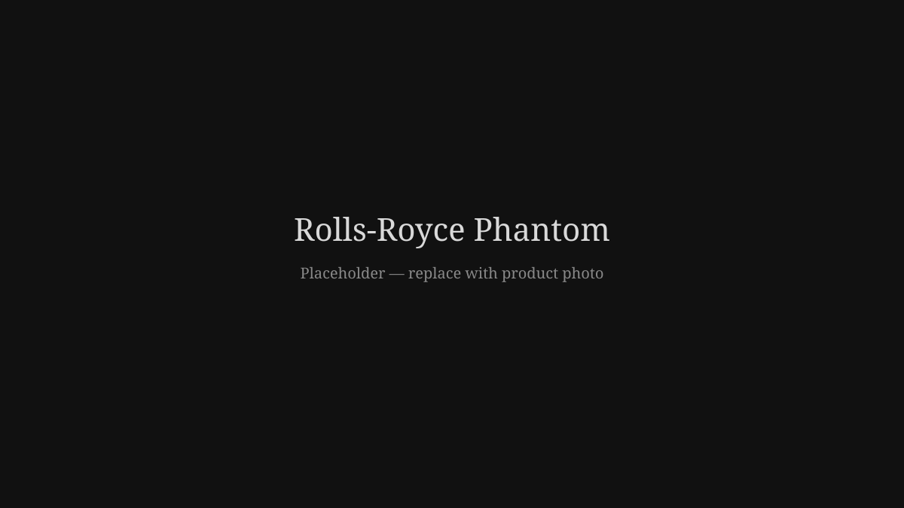

Rolls-Royce is not manufactured — it is hand-built, for those who have already arrived.

Every Rolls-Royce begins as raw material and ends as a signature, shaped by hand rather than machine. This is engineering elevated to craft, built for those who measure success by what endures.